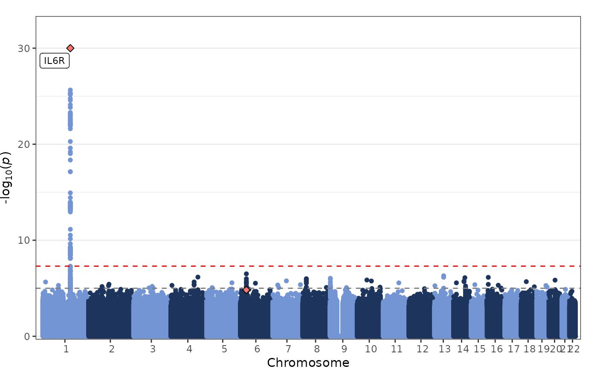

fig_manhattan creates a Manhattan plot for genomic markers
from across the genome, e.g. results from genome-wide association studies.
Usage
fig_manhattan(
data,
colours = c("#7395D3", "#1D345D"),
rank_pos = FALSE,
thin_thresh = NULL,
block_thresh = NULL,
interactive = FALSE,
interactive_n = NULL,
thresh = c(1e-05, 5e-08),
thresh_size = 0.5,
thresh_colours = c("grey50", "red"),
trunc = 1e-30,
highlight_colours = NULL,
point_size = 2,
chr_dist = 1e+07,
x_labels = TRUE,
label_top = TRUE,
label_thresh = 1e-05,
label_size = 3,
label_ylim = -log10(1e-05),
label_nudge_y = 0,
label_box = FALSE,
title = NULL,
title_size = NULL,
title_center = FALSE,
axis_text_size = NULL,
axis_title_size = NULL,
plot_width = 16,
plot_height = 8,
girafe = TRUE
)Arguments
- data
a
data.framecontaining the chromosome-position information and association statistics for each genomic marker (e.g., genetic variants) with the following columns:chrthe chromosome for each genomic markerposthe genomic position for each genomic markerpvaluethe association p-value for each genomic markerhighlightthe optional highlight points variable, where0= point not highlighted,1= first highlight colour,2= second highlight colour, etc.highlight_shapethe optional highlight point shape variable, where0= standard circle,1= standard circle with border,2= standard rectangle,3= standard rectangle with border,4= standard diamond,5= standard diamond with borderlabelthe optional point labelling variable (e.g. gene name), iflabel = ""for a point then no label is presented for that pointtextthe optional hover text variable for interactive plots to display further information, iftext = ""for a point then no hover text is presented for that point
- colours
a
vectorof colours used to differentiate chromosomes, these can either be a separate colour for each chromosome or a pair of colours (default:c("#7395D3", "#1D345D"))- rank_pos
a
logicalvalue whether genomic markers should be plotted by their rank position (default:FALSE)- thin_thresh
a
numericvalue representing the minimum p-value threshold for genomic markers to be displayed (default:NULL)- block_thresh
a
numericvalue for representing a p-value threshold, above which genomic markers are represented using blocks of colour (default:NULL)- interactive
a
logicalvalue indicating whether the plot should be interactive (default:FALSE)- interactive_n
a
numericvalue indicating the number of top associated points (max = 100,000) to present before using blocks of colour to minimise file size (default:NULL)- thresh
a
numericvectorproviding p-value thresholds to be plotted (default:c(1e-5, 5e-8))- thresh_size
a
numericvalue indicating the width of the lines indicating the p-value thresholds (default:0.5)- thresh_colours
a
charactervectorindicating the colours of the lines indicating the p-value thresholds (default:c("grey50", "red"))- trunc
a
numericvalue representing the maximum p-value for which results are displayed (default:1e-30)- highlight_colours
a
vectorindicating the colours for the highlighted genomic markers (default:NULL)- point_size
a
numericvalue indicating the size of each point (default:2)- chr_dist
a
numericvalue indicating the gap between different chromosomes (default:10000000)- x_labels
a
logicalvalue whether the x-axis should be labelled (default:TRUE)- label_top
a
logicalvalue whether the top associated points should be labelled (default:TRUE)- label_thresh
a
numericvalue providing a p-value threshold for labelling points (default:1e-5)- label_size
a
numericvalue indicating the size of each label (default:3)- label_ylim
a
numericvalue indicating maximum y-axis value at which labels can be displayed (default:-log10(1e-5))- label_nudge_y
a
numericvalue indicating the degree to which label placement on the y-axis should be adjusted (default:0)`- label_box
a
logicalvalue indicating whether labels should be surrounded by a box (default:FALSE)- title
a
character`` string providing a title for the plot (default:NULL`)- title_size
a
numericvalue indicating the size of the title text for the plot (default:NULL)- title_center
a
numericvalue indicating whether the plot title should be centered (default:FALSE)- axis_text_size
a
numericvalue indicating the size of the axis text for the plot (default:NULL)- axis_title_size
a
numericvalue indicating the size of the axis title text for the plot (default:NULL)- plot_width
a
numericvalue indicating the width of the plot (default:16)- plot_height
a
numericvalue indicating the height of the plot (default:8)- girafe
a
logicalvalue indicating whether an interactive plot should be turned into an interactive graphic using girafe() (default =TRUE)
Value
fig_manhattan returns a Manhattan plot for genomic markers
from across the genome, e.g. results from genome-wide association studies.
Details
This plotting function plots a Manhattan plot for genomic markers
from across the genome. The default is to truncate these results to
p-value cut-off of 1e-30.
Author
James Staley jrstaley95@gmail.com
Examples
fig_manhattan(
data = geni.plots::geni_test_manhattan,
block_thresh = 1e-4,
label_box = TRUE
)
